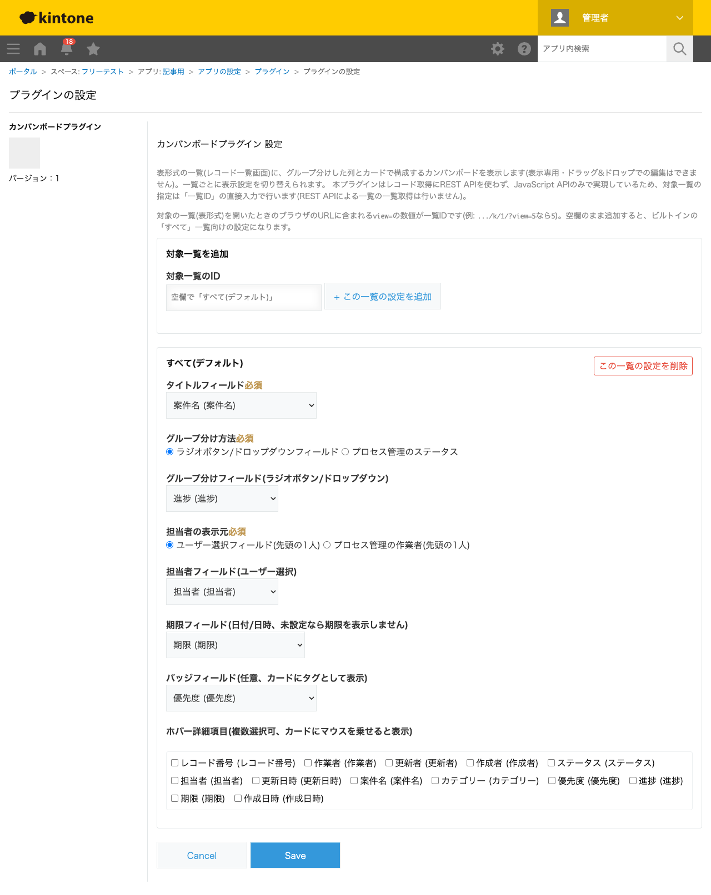
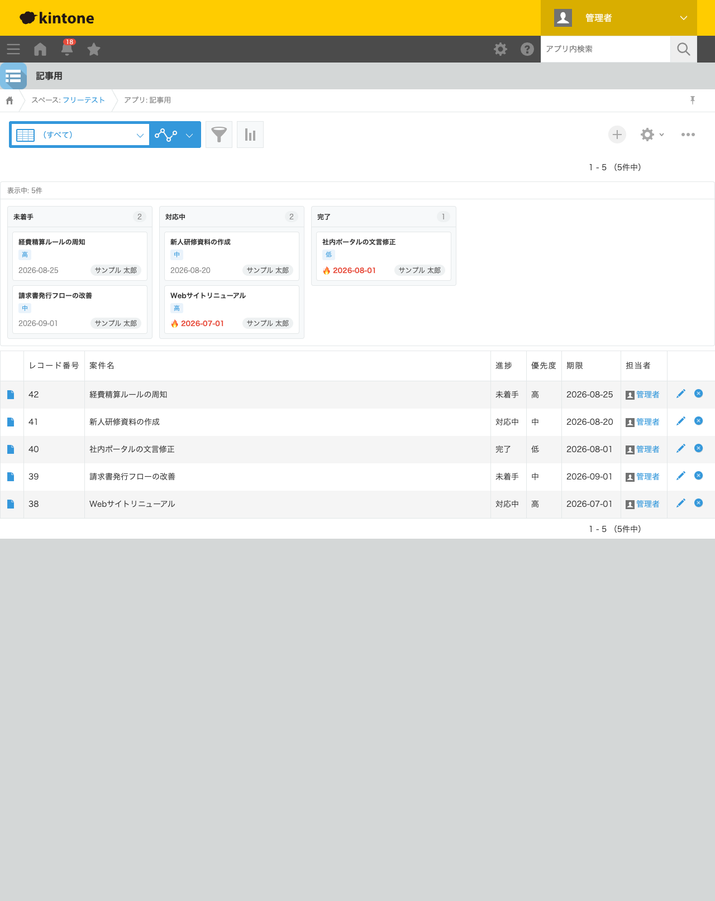

GovAppsプラグイン 安全性を確認できる無料kintoneプラグイン集
案件管理アプリやタスク管理アプリを表形式の一覧のまま眺めていると、「今どの案件が対応中で、 どれが完了したか」という全体感がつかみにくいことがあります。この記事では、無料プラグインで 進捗ごとに列分けしたカンバンボード(タスクボード)を一覧画面に表示する方法を、実際の設定画面と 表示結果つきで解説します。
kintoneの標準の一覧表示には、表形式のほかにカレンダー表示・グラフ表示がありますが、 列(グループ)とカードで構成するカンバン形式の表示は標準機能にはありません。絞り込み条件を 切り替えれば「対応中の案件だけ」を表示することはできますが、未着手・対応中・完了を 同時に見比べることはできず、切り替えるたびに一覧を開き直す手間がかかります。 プロセス管理を使えば案件ごとのステータス自体は管理できますが、それを列分けしたボードとして 俯瞰する機能までは標準に含まれていません。JavaScriptカスタマイズを自作すればカンバン表示 自体は実現できますが、グループ分けのロジックや列・カードの描画、期限超過の判定などを 一から実装することになり、簡単な作業ではありません。
「一覧をカンバンボードとして表示する」機能を用意する方法は、大きく4つあります。 それぞれの向き不向きをまとめました。
| 方法 | 向いている場合 | 注意点 |
|---|---|---|
| kintone標準機能のみ | 案件数が少なく、絞り込みの切り替えだけで十分な場合 | 複数の進捗を同時に見比べられない |
| JavaScriptを自作する | 社内に開発者がいて、列の見た目やカード項目に独自要件が多い場合 | グループ分け・描画・期限判定を自前で実装・保守する必要がある |
| 有料の他社プラグイン | 予算があり、ドラッグ&ドロップ編集など高機能を求める場合 | 月額課金が発生する。ソースコードが非公開で、外部通信の有無を利用者側で確認しにくいことが多い |
| GovAppsプラグイン(このプラグイン) | 無料で試したい、表示専用で十分、社内・庁内でセキュリティを確認してから導入したい場合 | 表示専用のためドラッグ&ドロップでの編集はできない |
GovAppsのプラグインはすべて無料・広告なしで、追加課金なしで使い続けられます。 ソースコードはGitHubで全公開しているオープンソースなので、 「本当に外部と通信していないか」「レコードの取得方法」を自治体・企業のセキュリティ担当者 自身の目で確認できます(このプラグインも個別ページにセキュリティレビュー結果を掲載しています)。 無料プラグイン配布サイトの中でも、ここまで確認可能性を重視しているのはGovAppsの特徴です。
カンバンボードプラグインは、一覧ごとにグループ分け方法・ 担当者の表示元・カードに表示する項目を設定するだけで、レコード一覧画面(表形式)の上に カンバンボードを表示します。今回は「案件名」「進捗」(ドロップダウン: 未着手/対応中/完了)・ 「優先度」(ラジオボタン)・「期限」(日付)・「担当者」(ユーザー選択)を持つ案件管理アプリで 設定しました。

アプリを更新してレコード一覧画面を開くと、表形式の一覧の上に「未着手」「対応中」「完了」の 3列に分かれたカンバンボードが表示されます。各カードには案件名・優先度バッジ・期限・担当者名が 並び、期限が今日より前の案件には自動で🔥マークが付きます。 今回のサンプルでは「Webサイトリニューアル」(対応中・期限2026-07-01)と 「社内ポータルの文言修正」(完了・期限2026-08-01)が期限超過として赤字で強調表示されました。

案件の進捗を変更したい場合は、レコードを開いて「進捗」フィールドの値を変更するだけです (表示専用のプラグインのため、ボード上でカードをドラッグして列を移動する操作はできません)。 カードをクリックすると、そのレコードの詳細画面が別タブで開くため、ボード側の 絞り込みやスクロール位置を失わずに済みます。